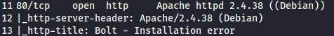

Server: Apache/2.4.38 (Debian)


nfs_acl:network file share(similar to smb)
#ffuf -w /usr/share/wordlists/dirbuster/directory-list-2.3-medium.txt:FUZZ -u http://192.168.57.9/FUZZ
#showmount -e 192.168.57.9(target IP)
The `showmount` command is used to display the NFS shares available on an NFS server. By running `showmount -e 192.168.57.9`, you can see the list of directories that are exported by the NFS server with the IP address "192.168.57.9."
Example output:
```
Export list for 192.168.57.9:
/srv/nfs <client_IP>
/home <another_client_IP>
```
In this example, the NFS server at 192.168.57.9 exports two directories: "/srv/nfs" and "/home." The "<client_IP>" and "<another_client_IP>" are placeholders for the IP addresses of the clients that are allowed to access those directories.
https://www.youtube.com/watch?v=1TBD9aMQ7Rg(watch this to understand nfs and mount)

/srv/nsf:the folder that we can access
172.16.0.0/12,10.0.0.0/8,192.168.0.0/16:all the ip address that can access the file share
we create a folder /mnt/dev to link to server side file share folder that is /srv/nfs(server network file share)

#mnt -t nfs 192.168.57.9:/srv/nfs /mnt/dev- mount: This is the command used to mount file systems in Linux.
- -t nfs: This option specifies the file system type, which in this case is "nfs" to indicate that it is an NFS share.
- 192.168.57.9:/srv/nfs: This is the source of the NFS share. The IP address "192.168.57.9" is the server's IP address hosting the NFS share, and "/srv/nfs" is the exported directory on the server that is being shared.
- /mnt/dev: This is the local mount point where the NFS share will be mounted on the client system. The directory "/mnt/dev" must exist on the client system before running the command.
this links folder nfs to /mnt/dev

we find save.zip file

but we dont have the password to unzip them
tool:fcrackzip(to crack zip file passwd)
#fcrackzip -v -u -D -p /usr/share/wordlists/rockyou.txt save.zip
-v:verbosity
-u:unzip
-D:dictionary attack(the wordlists we will be using)
-p:the file we attack

passwd is java101
now unzip again


jp:probably the name of user:use it in ssh connection attempt

we must have an ssh account on the server to be able to use it
id_rsa can be used to connect via ssh(in nmap scan we saw ssh port 22 open)
#ssh -i id_rsa jp@192.168.57.9
connection to a remote server using a private key for authentication- ssh: This is the command used to initiate an SSH connection to a remote server.
- -i id_rsa: This option specifies the identity file, i.e., the private key used for authentication. In this case, the private key file is named id_rsa. The private key file must be present in the current directory or you need to provide the full path to the private key file
SSH key-based authentication is an alternative to using passwords for authentication. Instead of entering a password each time you connect to a remote server, you use a private-public key pair. The private key (`id_rsa` in this case) remains on your local machine, while the public key is added to the `~/.ssh/authorized_keys` file on the remote server.
Before using the `ssh` command with an identity file, make sure the private key (`id_rsa` in this case) has the correct permissions set to keep it secure:

on port 8080:

http://192.168.57.9:8080/dev
on port 80
http://192.168.57.9/app

download config.yml

on port 8080 we have a registration page

just register with any username and passwd
eg:member:hacker
password:hacker

go to exploit db and check if anything is useful

paste that in url
*we need to have created an account to perform Local File Inclusion(LFI)


jp:jean paul(found him xD)
try /etc/shadow is well(dosent work here but try on other instances)
try ssh again with jeanpaul
#ssh i id_rsa jeanpaul@192.168.57.9

we can either brute force passphrase or we found in the todo.txt

and we also found a password from config.yml

so we can try this passphrase

and we get access(but we are a low level user)

we can run sudo zip without password
#sudo zip
website:gtfobin(to search for different type of privilage escalation)
here we require a sudo escalation
click sudo then on zip

copy 1st cmd and paste
then the 2nd cmd
this gives us a shell
if we type
#id
we are returned information telling us that we are root